地形素材专贴|持续更新
pe4n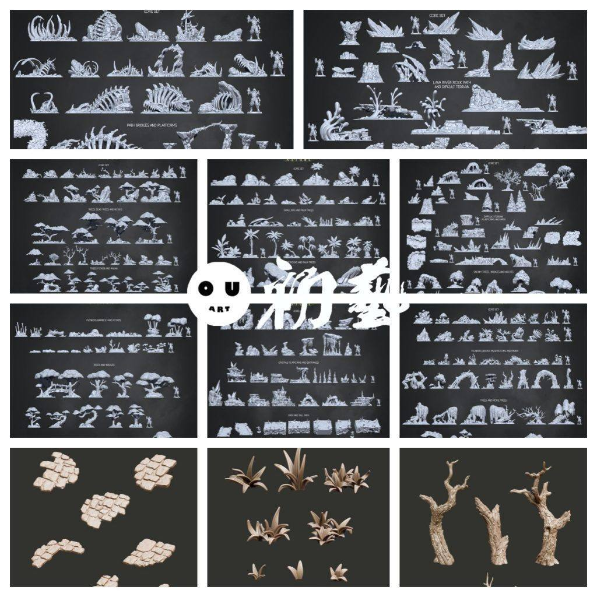
树木植物
https://pan.baidu.com/s/1m1lTFhVp65-Co-9ehm2NCQ 提取码: pe4n
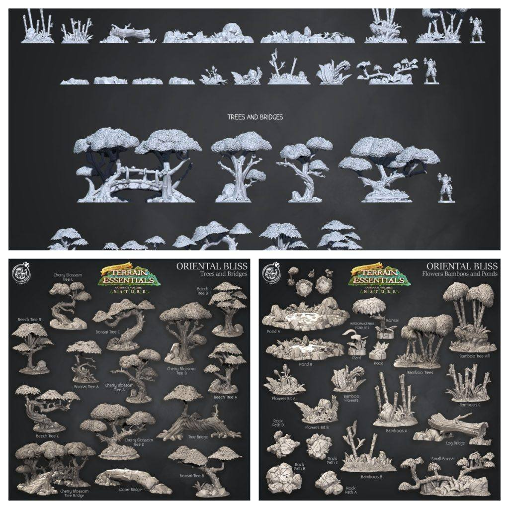
荒地地形
https://pan.baidu.com/s/1yJbvdkKqa0wX0cYQCf7Gkg 提取码: 3sww
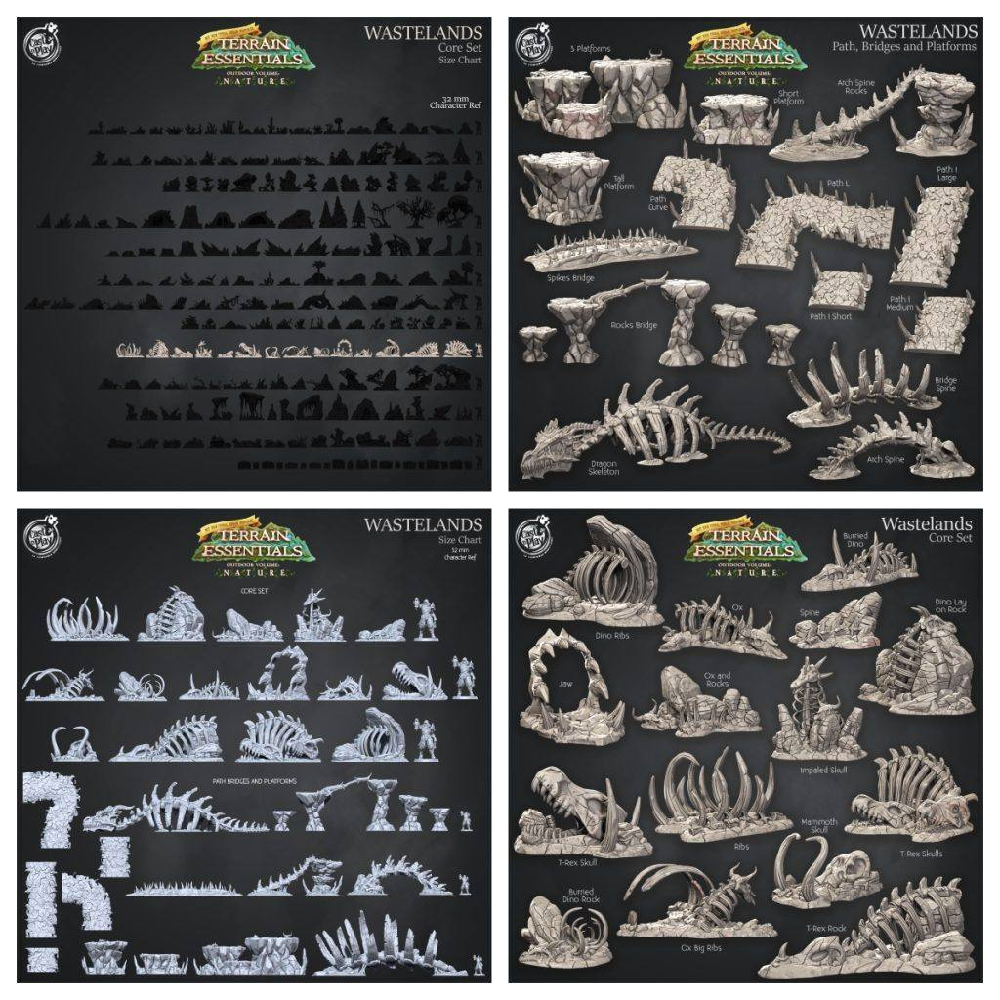
草素材
https://pan.baidu.com/s/1p9AqbZcg00bsKSicBYnD6A 提取码: j5mj

破水管素材
https://pan.baidu.com/s/18DiLHyAcKNvhIoRphmHQUg 提取码: nbbz
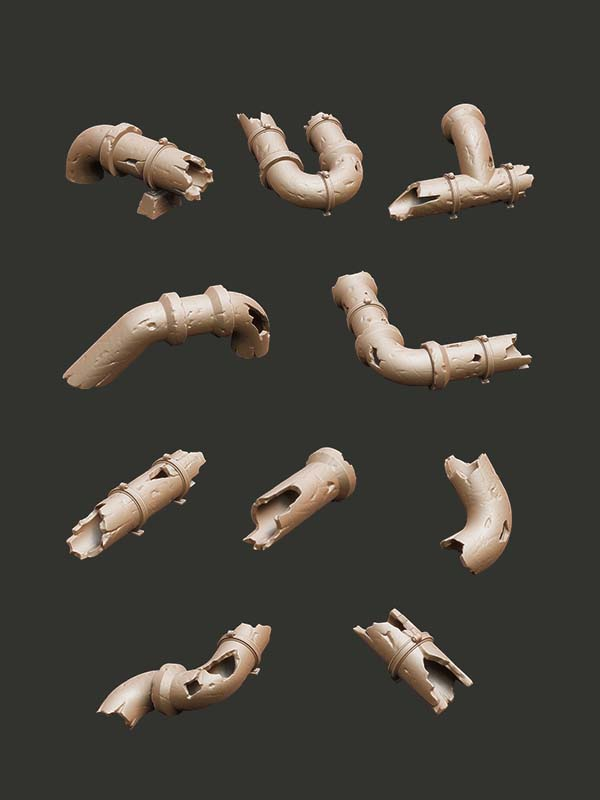
真菌地形
https://pan.baidu.com/s/14lHtyIQesnVoe4FlHi00Pw 提取码: twu5
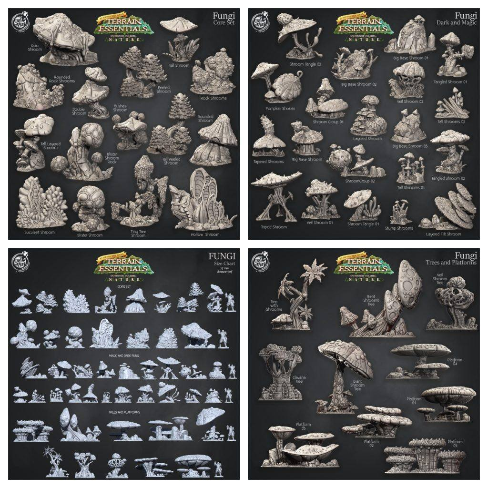
火山地形
https://pan.baidu.com/s/1EYaxOxGekhlAeyByduH1hg 提取码: 6f8e
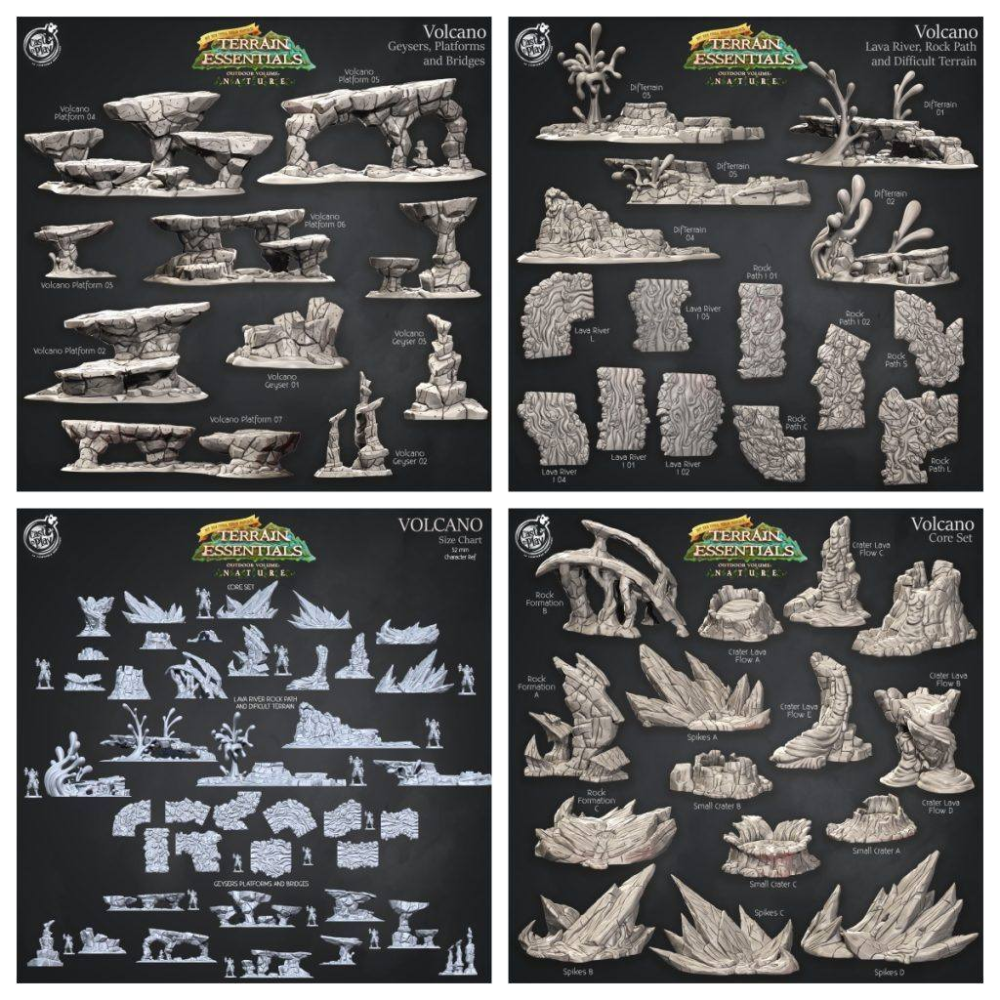
海滩地形组
https://pan.baidu.com/s/1Edce_5vrkXLD-BGhPDl-Kg 提取码: zxsw
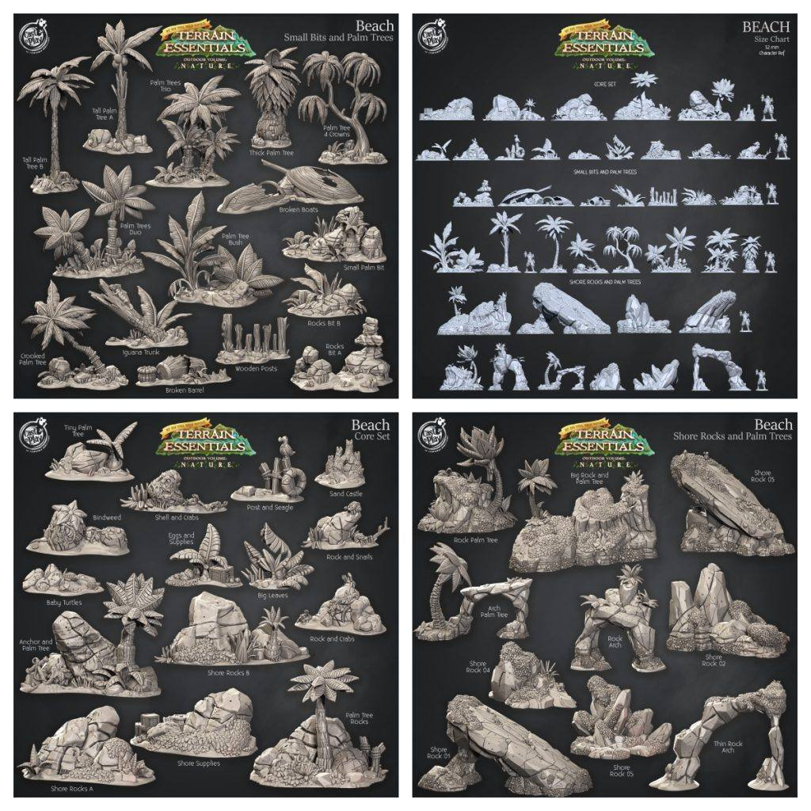
洞穴地形组
https://pan.baidu.com/s/1kL6KQe8KDZw75L8dJjboHg 提取码: uvbd
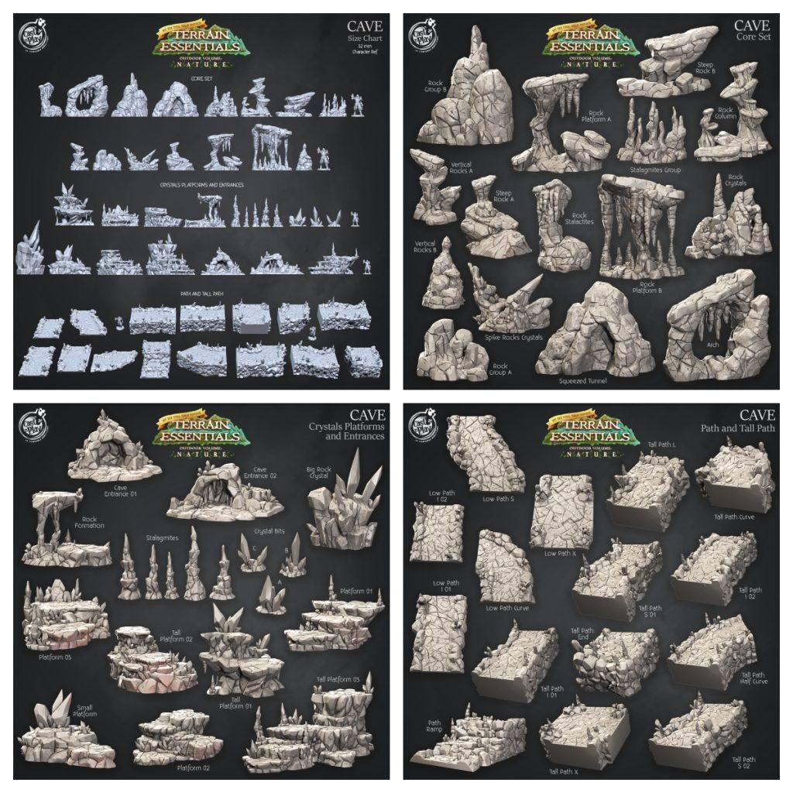
沼泽地形
https://pan.baidu.com/s/174BCC7Ft1sQs7Z_7hWf2bQ 提取码: a2fq
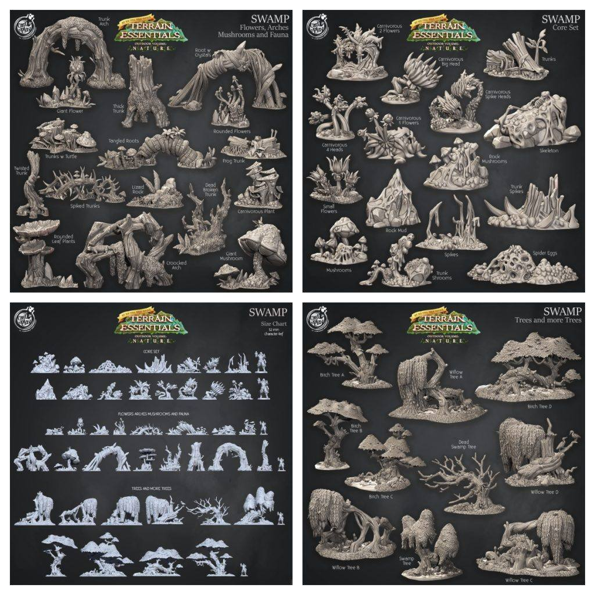
地形设置
https://pan.baidu.com/s/18nuYHq9AmAquiusgdFfimQ 提取码: 7k3c
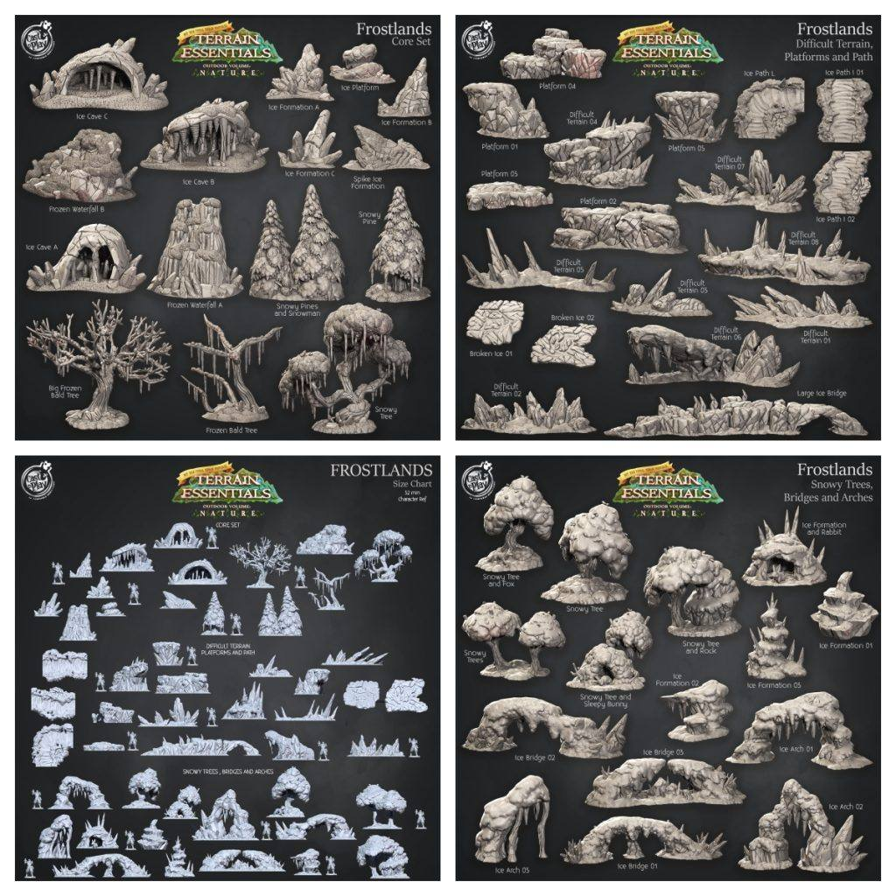
东方地形
https://pan.baidu.com/s/1E8NiPcFwNVE3CHIJIVUO9Q 提取码: ark1
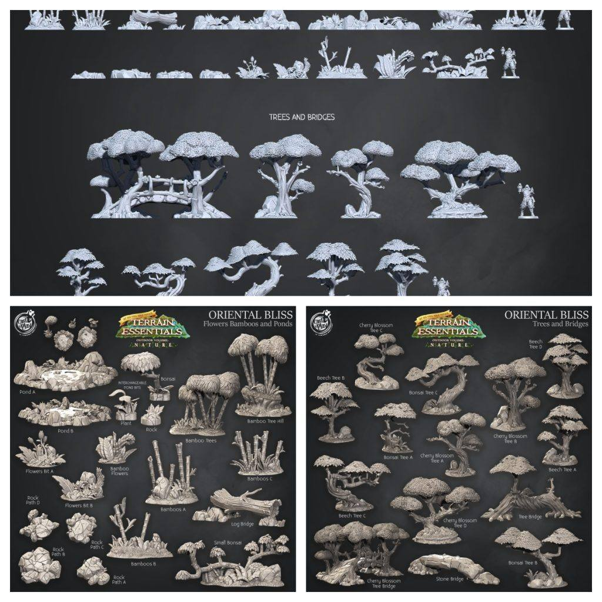
以上内容仅供个人使用（非商用）
ONLY for PERSONAL (NON-COMMERCIAL) use.
加群获得更多免费模型！